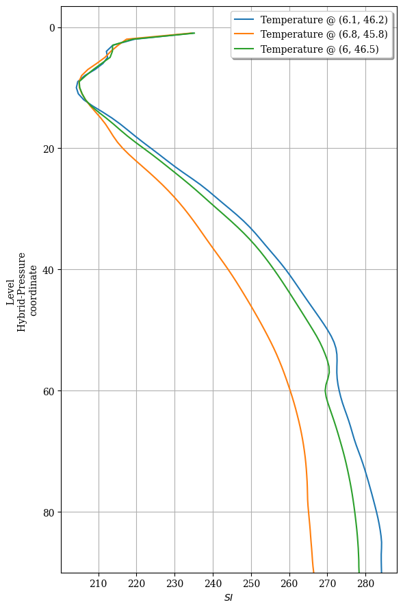

Convert profiles vertical coordinate from Hybrid-Pressure to altitude¶
[1]:
%matplotlib inline
# for figures in notebook
# import & initialize epygram
import epygram
epygram.init_env()
import os
INPUTS_DIR = os.path.join('..', 'inputs')
[2]:
r = epygram.resources.meta_resource(os.path.join(INPUTS_DIR, 'ICMSHAROM+0022'), 'r', 'CL') # CL = CombineLevels
[3]:
# in a "CL" meta-resource, fields are to be grabbed through a GRIB2 nomenclature
t_as_grib2 = dict(discipline=0, parameterCategory=0, parameterNumber=0, # this is temperature
typeOfFirstFixedSurface=119) # hybrid-pressure levels
[4]:
t3d = r.readfield(t_as_grib2)
[5]:
t3d.sp2gp()
[6]:
# extract profiles
profiles = []
for position in [(6.1,46.2), (6.8,45.8), (6,46.5)]:
profgeo = t3d.geometry.make_profile_geometry(*position) # make a V1D geometry at that position
profiles.append(t3d.extract_subdomain(profgeo)) # extract subdomain corresponding to the geometry of the profile
[7]:
fig = ax = None
for p in profiles:
fig, ax = p.plotfield(labels='Temperature @ ({}, {})'.format(p.geometry.grid['longitudes'][0],
p.geometry.grid['latitudes'][0]),
over=(fig, ax)) # superpose profiles

and now on an Altitude z-axis¶
[8]:
# for the conversions, we need R and T profiles, so (at least) q and T
q_as_grib2 = dict(discipline=0, parameterCategory=1, parameterNumber=0, # this is specific humidity
typeOfFirstFixedSurface=119) # on hybrid-pressure levels
q3d = r.readfield(q_as_grib2)
[9]:
# but also Surface pressure and geopotential
ps = epygram.formats.resource(r.resource.container.abspath, 'r').readfield('SURFPRESSION')
zs = epygram.formats.resource(r.resource.container.abspath, 'r').readfield('SPECSURFGEOPOTEN')
# Ps is spectral and ln(Ps)
ps.sp2gp()
ps.operation('exp')
zs.sp2gp()
[10]:
from epygram.geometries.VGeometry import hybridP2altitude
from bronx.meteo.conversion import q2R
for p in profiles:
q_profile = q3d.extract_subdomain(p.geometry).data # profile of q at the same place
# specific humidity (and optionally hydrometeors) to moist air specific constant R
R_profile = q2R(q_profile)
t_profile = p.data
ps_local = ps.getvalue_ll(p.geometry.grid['longitudes'][0],
p.geometry.grid['latitudes'][0])
zs_local = zs.getvalue_ll(p.geometry.grid['longitudes'][0],
p.geometry.grid['latitudes'][0])
# create the Z vertical coordinate
p.geometry.vcoordinate = hybridP2altitude(p.geometry.vcoordinate,
R_profile,
t_profile,
ps_local,
vertical_mean='geometric',
Phi_surf=zs_local,
Pdep=None) # we could also provide a (NH) Pressure-departure profile for more accuracy
[11]:
fig = ax = None
for p in profiles:
fig, ax = p.plotfield(labels='Temperature @ ({}, {})'.format(p.geometry.grid['longitudes'][0],
p.geometry.grid['latitudes'][0]),
over=(fig, ax)) # superpose profiles
[ ]: